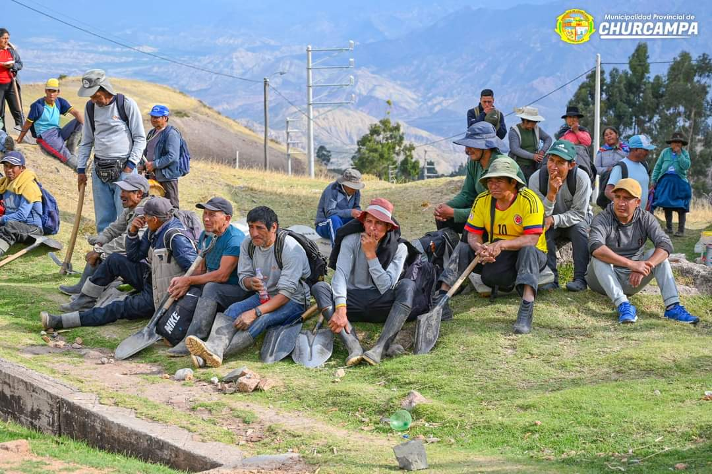

CCARMENCCA CHURCAMPINA
Churcampa es caracterizado por el lugar turístico "EL CHORRO", lugar muy característico de las costumbres de la provincia de Churcampa, al ingreso nos encontramos con la vicuña un camélido que representa a la riqueza animal de nuestra nación. En seguida podemos apreciar el agua subterránea que baja desde el cerro Ccoccomarca y desemboca en el Chorro donde antiguamente sirvió de agua potable para los pobladores Churcampinos. Si avanzamos más allá podemos apreciar la figura del puma que representa al barrio Pumaccasa; al costado observamos un zorro que representa al Barrio Atoccasa de Allí su nombre de Atocc nombre quechua del Zorro andino. Al frente observamos la figura del campesino churcampino que está trabajando con el chaquitaclla acompañado de dos cantantes de harawi y un tinyero; esta forma de trabajo es propia de nuestro antiguo Tawantinsuyo donde el trabajo era una fiesta. Todo ello podemos encontrar en nuestro Ecoturistico de Churcampa.
¡No dejes de Visitar!
MOTOCROS CHURCAMPINO
El circuito de carreras de motocross en el lugar de PioPampa es un escenario icónico para los apasionados de este deporte extremo. El terreno natural accidentado de la zona ofrece un trazado desafiante con múltiples obstáculos, como saltos elevados, curvas pronunciadas y zonas de terreno irregular, que exigen un alto nivel de habilidad y control por parte de los pilotos. Esta carrera se celebra como parte de eventos locales y atrae a motociclistas experimentados que buscan demostrar su destreza en uno de los circuitos más demandantes de la región. El motocross en Pio Pampa no solo es una prueba de resistencia y técnica, sino también un atractivo evento que reúne a la comunidad local, turistas y aficionados al deporte. Con su ambiente cargado de emoción y competencia, esta carrera se ha consolidado como un evento clave para promover el deporte y fortalecer los lazos sociales y culturales de la región, ofreciendo además una plataforma para el desarrollo del turismo deportivo.
¡No dejes de Visitar!
RALLY CHURCAMPINO
El rally organizado en el aniversario de la provincia de Churcampa, celebrado a inicios de enero, es uno de los eventos deportivos más esperados de la región. Este emocionante rally tiene lugar en los alrededores de la Laguna de Pirhuaccocha, un escenario natural impresionante que añade un desafío único a la competencia. Los conductores deben sortear terrenos escarpados y caminos sinuosos, lo que pone a prueba tanto su habilidad como la resistencia de sus vehículos. Además de la adrenalina de la carrera, el evento se enmarca en las festividades del aniversario, atrayendo a competidores, turistas y locales que disfrutan del deporte en medio de las bellezas naturales y las tradiciones culturales de Churcampa. La combinación de naturaleza y deporte convierte al rally en un símbolo de orgullo local, destacando el espíritu aventurero y festivo de la provincia
¡No dejes de Visitar!
CHACCO DE VICUÑA EN TUYPACANCHA
El Chacco de Vicuñas en Tullpacancha es una práctica ancestral, especialmente en las
comunidades andinas de Perú y Bolivia, que consiste en la captura y esquila de vicuñas de
manera sostenible y respetuosa con el medio ambiente. En este evento comunitario, las vicuñas,
que son animales silvestres y protegidos, son acorraladas mediante un cerco humano llamado "chacco".
Una vez capturadas, se les esquila la lana, que es extremadamente valiosa por su calidad y
suavidad, y posteriormente se les libera.
Este ritual no solo tiene una importancia económica por el aprovechamiento de la fibra de vicuña,
sino que también tiene un valor cultural y simbólico, ya que refuerza el vínculo entre la comunidad
y la naturaleza, respetando el equilibrio ecológico y la conservación de la especie. Tullpacancha
es uno de los lugares donde esta tradición ha perdurado a lo largo del tiempo, siendo parte del
patrimonio cultural andino.
FAGRO
Chaqmeo churcampino
El concurso de chacmeo, realizado en el mes de junio en la Facultad de Agronomía (FAGRO), es una tradición académica y cultural que celebra el conocimiento técnico y práctico de los estudiantes en la preparación y manejo del suelo agrícola. Durante este evento, los participantes demuestran sus habilidades en el chacmeo, una técnica tradicional utilizada en la agricultura para mejorar la estructura del suelo y optimizar la productividad. El concurso no solo promueve la competencia amistosa entre los estudiantes, sino que también fomenta el aprendizaje colaborativo y resalta la importancia de las prácticas agrícolas sostenibles.
Yarcca Laccay
El Yarcca Laccay, o limpieza de canales, es una actividad tradicional que se realiza en la Facultad de Agronomía (FAGRO), destacando la importancia del manejo adecuado del agua en la agricultura. Esta actividad, que tiene raíces ancestrales, consiste en la limpieza y mantenimiento de los canales de riego, fundamentales para garantizar el flujo adecuado de agua hacia los campos de cultivo. En la FAGRO, el Yarcca Laccay se convierte en una oportunidad educativa, donde los estudiantes participan activamente en esta tarea, aprendiendo sobre la gestión de recursos hídricos y la importancia de mantener los sistemas de riego en óptimas condiciones. Además de su valor práctico, el evento fortalece la conexión con las tradiciones agrícolas y fomenta el trabajo colaborativo entre los estudiantes, profesores y la comunidad.
¡No dejes de Visitar!
Morochuco Churcampino
La carrera de caballos o Morochuco en el barrio Miraflores es un evento tradicional
que celebra tanto la destreza ecuestre como la cultura local. Este evento reúne a
jinetes de distintas zonas, quienes, montados en sus mejores caballos, compiten en
un circuito preparado para poner a prueba la velocidad, agilidad y control de los corceles.
En Miraflores, la carrera de Morochuco es más que una competencia, es una celebración que refleja
el vínculo profundo entre las comunidades y sus animales, siendo los caballos símbolos de trabajo,
tradición y resistencia.
El barrio se llena de vida y emoción durante este evento, donde los espectadores,
tanto locales como visitantes, se congregan para animar a los jinetes y disfrutar del espectáculo.
Además de la competencia ecuestre, la carrera en Miraflores se convierte en una ocasión festiva,
acompañada de música, comidas típicas y actividades tradicionales que fortalecen el sentido de
identidad y cohesión comunitaria. La Morochuco es una expresión del patrimonio cultural,
que mantiene vivas las costumbres ancestrales mientras sigue evolucionando como parte de
las celebraciones modernas del barrio.